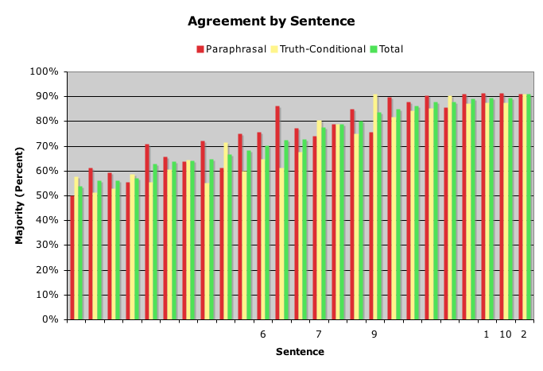
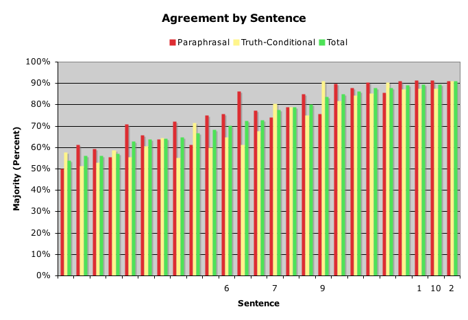

Results


Results
Question: How Can People Disambiguate Best?
Universality and Referentiality: Did They Help?
Apparently.
Sentences with hypothetically easier features: 1, 2, 6, 7, 9, 10.

|
Results
|
ResultsQuestion: How Can People Disambiguate Best?Universality and Referentiality: Did They Help?Apparently. Sentences with hypothetically easier features: 1, 2, 6, 7, 9, 10.  |